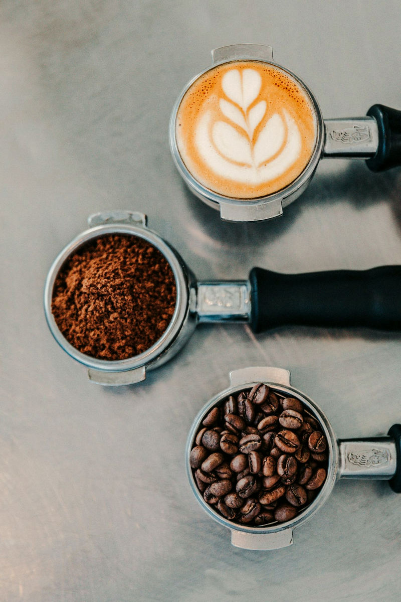
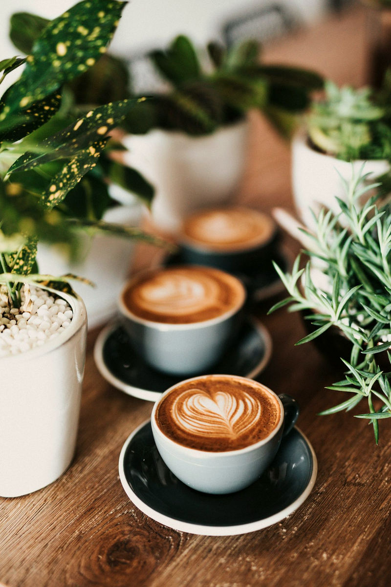

About the room
The house is a study, written as if it were open.
Maison Café was designed as a portfolio piece: a complete little website for a café that does not exist, so that a real business can see the kind of work WEBAUR makes.

What matters is the atmosphere. A café website often becomes a gallery of stock breakfasts and a list of opening hours. We wanted the site to behave more like a short essay with photographs: a few large stills, a careful typeface, and enough quiet that the food can be looked at properly.
The room is assembled from licensed photographs — a conservatory table, a green interior, an evening bar — colour-graded so they feel like one house. They do not depict a real Maison, and they should not be read as a claim that this café exists.
The menu is written the way a neighbourhood counter might speak, then clearly labelled as an example. There is no ordering, and no invented review of the kitchen.
Coffee, without a manifesto
The bar is short on purpose. Filter, espresso, a house latte, chocolate, a pot of tea. Milk when you ask for it. The point is not a specialist lecture; it is a cup, and a table to sit with it.


Visit
The hours are an example. The door is not.
If you are a real café looking at this page, the next step is not to visit Maison — it is to see whether this is the kind of site you would want for your own room.